前言 因為專案上，有使用到ActiveX Control的問題，所以來了解一下ActiveX Control如何建立、安裝和偵錯。
準備工作 在我們開始開發ActiveX控制項前，必須要先做一些準備工作，以便在開發發完成時順利測試控級項，最重要的是Internet Explorer的安全性設定，在開發時期棊本上我們不會進行元件的安全設定（例如簽章），為了要讓測試工作可以順利，我們要對IE的安全性做一些設定。
目前的環境是win10下的IE，在IE11下要叫出選單，可以按下「Alt」鍵
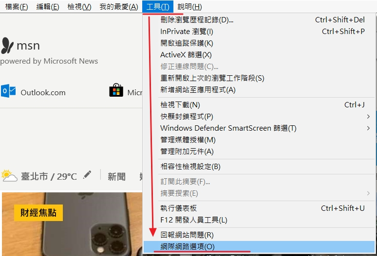
首先，我們要先把網站加入受信任的網站，我們可以由控級項的網際網路選項（或是Internet選項）中，在「安全性」頁籤中，選取「信任的網站」，然後按「網站」按鈕（）將本機的網址（本文為http://localhost），加入信任網站中：
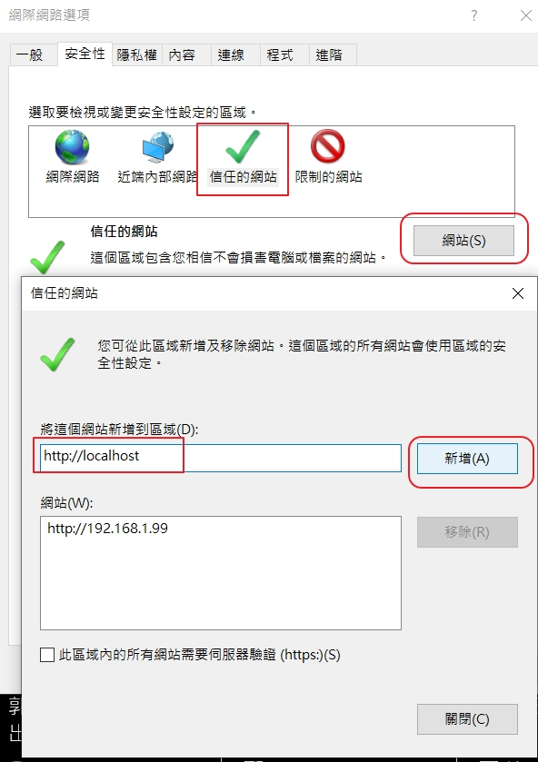
加入完成後，一樣在「安全性」頁籤的「信任的綱站」，按下「自訂等級」按鈕，會顯示安全等級的細部設定視窗：
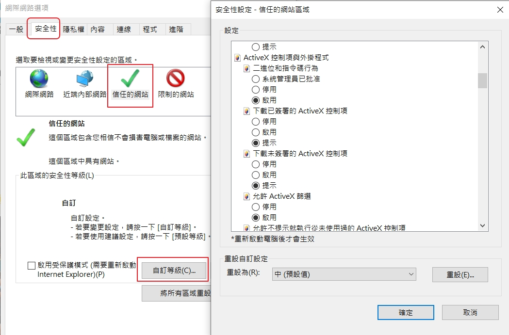
請依下表設定安全層級：
選項
值
下載未簽署的ActiveX控制項
提示（Prompt）
允許程式碼片段
提示（Prompt）
將未標示成安全的ActiveX控制項初始化並執行指令碼
提示（Prompt）
設定好以後，我們就可以來開始開發我們的控制項了。
使用C#開發ActiveX控制項-基本功能 本文將使用C#以及Visual Studio 2017作為開發環境。同時，我不會在這裡說明細部的操作操序，因此我假定你對Visual Studio的操作已經有基本的瞭解。
建立一個空白的方案：（NetActiveXControlSln）
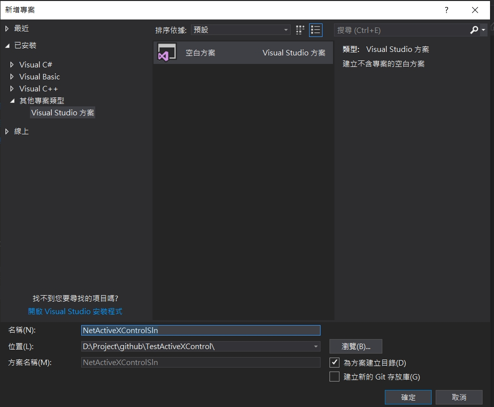
建立類別庫專案 然後，在方案中新增一個C#的類別庫專案（我的專案命名是MyControl），這個專案會產生DLL檔案，也是作為控制項的專案之一。你也可以用Windows Forms控制項專案來做，但因為我們不一定會需要使用者介面，因此由類別庫專案來開發會比較簡單。
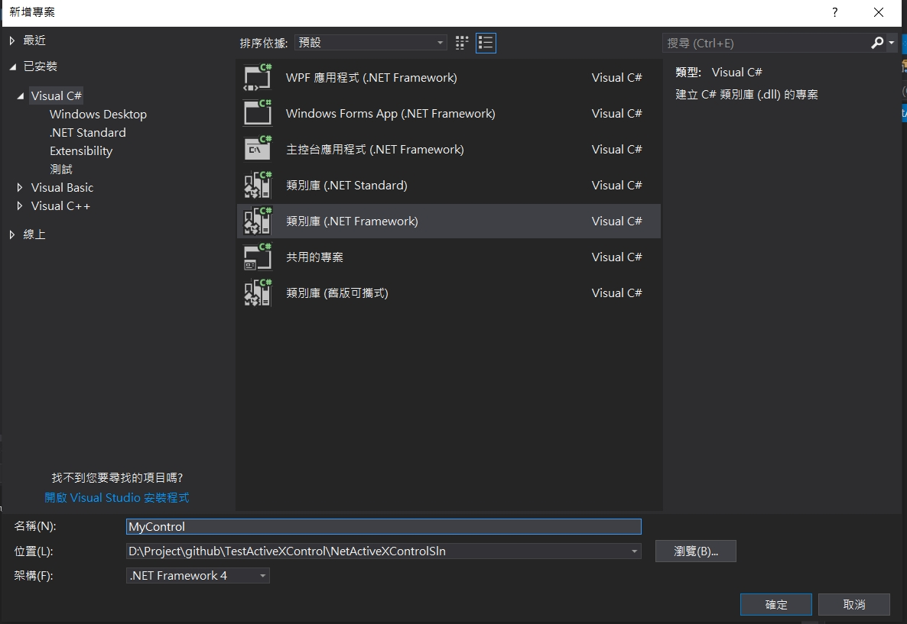
設定專案資訊 當專案產生後，請將專案內容打開並選擇「應用程式」的頁籤，接下來點選「組件資訊」，將「讓組件成為COM可見（M）」勾選起來
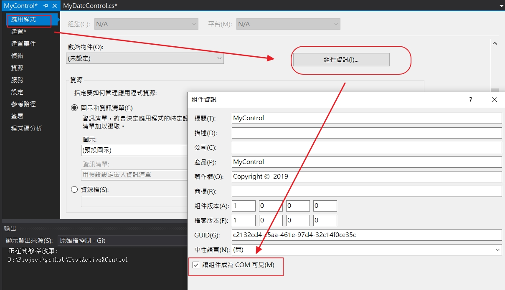
請將專案內容打開，然後把預設的Class1.cs檔案更名為MyDateControl.cs（若ViauslStudio提示更變類名稱，請接受它）
建立簽署 請將專案內容打開並選擇「簽署」，將「簽署組件」打勾，第一次在，選擇強式名稱金錀中選「新增」，會跳出金錀檔名稱，和密碼，輸入後確定。
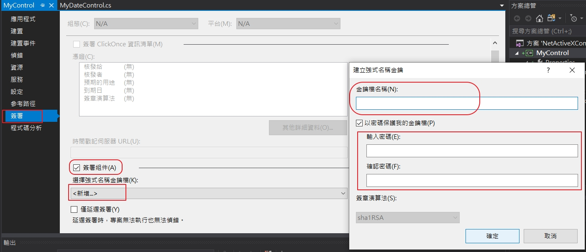
產生GUID 在選擇「工具」->「建立GUID」來建立新的GUID，選擇5在下面可以看到產生的GUID，按下「複製」可襖製GUID，等下在程式碼裏會用到。
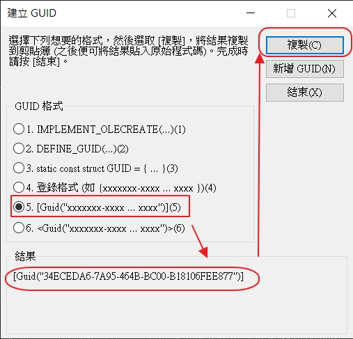
修改程式碼 在程式碼中加入ProgId、Guid、ComVisible到程式碼中和取得今天的日期
1 2 3 4 5 6 7 8 9 10 11 12 13 14 15 16 17 18 19 using System; using System.Runtime.InteropServices; namespace MyControl { [ProgId("MyControl.MyDateControl")] [ClassInterface(ClassInterfaceType.AutoDual)] [Guid("415D09B9-3C9F-43F4-BB5C-C056263EF270")] [ComVisible(true)] public class MyDateControl { public DateTime Today { get { return DateTime.Today; } } public string GetTodayDateString() { return DateTime.Today.ToString("yyyy/MM/dd HH:mm:ss"); } } }
建置專案和註冊 先用VS來建置專案來產生dll檔，接下來以VS提供的工具來註冊剛才產生dll檔，在VS的工具找到適用於VS2017的開發人命令提示字元的工具，來註冊regasm /codebase <full path of dll file>，移除註冊regasm /u <full path of dll file>
1 regasm /codebase "D:\Project\github\TestActiveXControl\NetActiveXControlSln\MyControl\bin\Debug\MyControl.dll"
建立網頁來測試 在建立index.html來測試，先好的專案內容否下
1 2 3 4 5 6 7 8 9 10 11 12 13 14 15 16 17 18 19 20 21 <!DOCTYPE> <html > <head > <title > DemoCSharpActiveX webpage</title > </head > <body > <OBJECT id ="DemoActiveX" classid ="clsid:415D09B9-3C9F-43F4-BB5C-C056263EF270" codebase ="DemoCSharpActiveX.cab" > </OBJECT > <script type ="text/javascript" > try { var obj = document .DemoActiveX; if (obj) { alert(obj.GetTodayDateString()); } else { alert("Object is not created!" ); } } catch (ex) { alert("Some error happens, error message is: " + ex.Description); } </script > </body > </html >
在VisualStudio下偵錯 在要偵錯點，先加入斷點，在選擇「偵錯」下的「附加至處理序」，在找到真正的iexplore.exe，在選擇「附加」
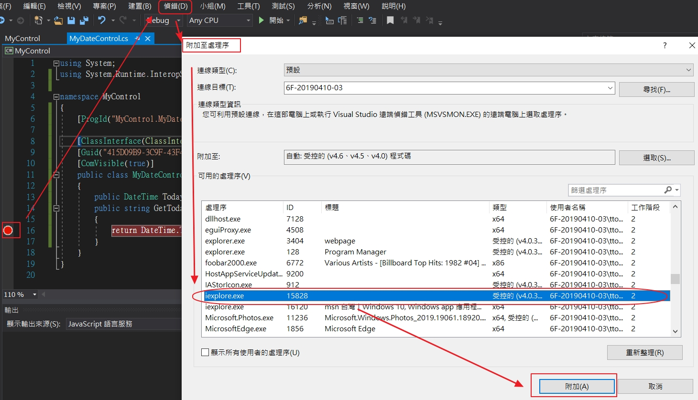
將上面的網頁以IE來打開，會先出現
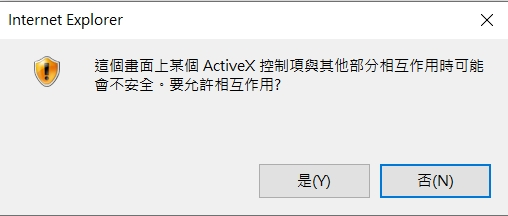
按下是後會跳到debug畫面
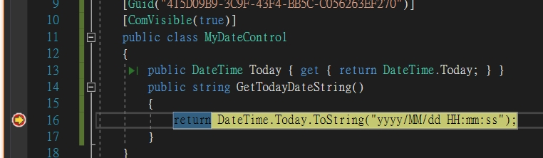
接下來在VS按下繼續會跳到此畫面
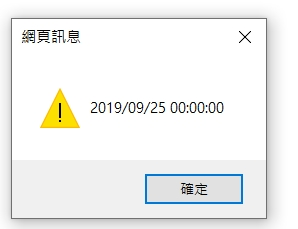
使用C#開發ActiveX控制項-產生使用者介面 在完成了上面的控制項後，你應該會用C#開發ActiveX控制項有一點感覺，我們再來寫一個具有使用者介恷的控制項，基本上作法差不多，但這次要新增的是Windows Forms使用者控制項（我的控制項命名為MyDateControlUI）
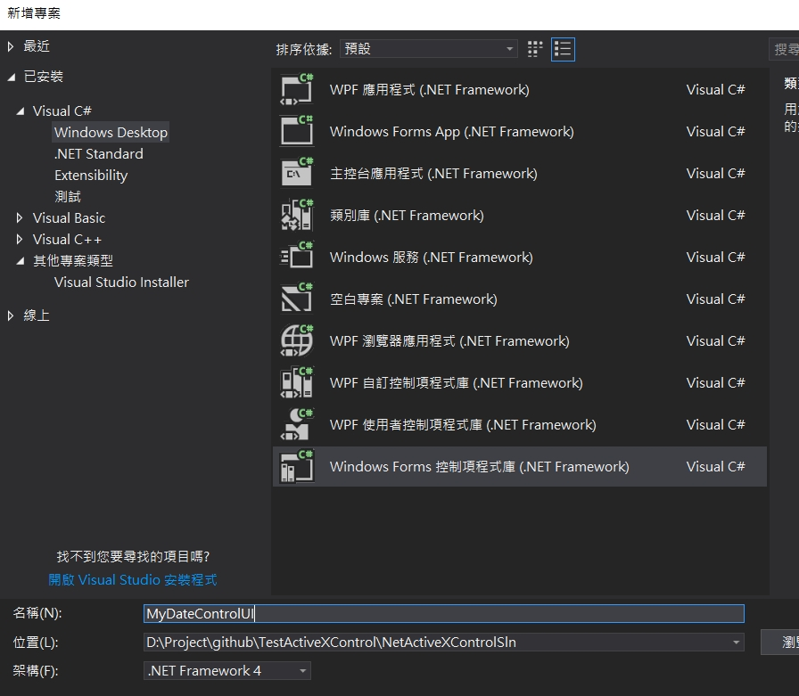
新增完成時，Visual Studio會開啟Designer視窗，請在上面放兩個按鈕，如同前一個範例一樣，其中一個是顯示今日的日期（cmdDisplayToday），但另一個會讀取本机上的登錄資料庫（cmdGetOSVer），以取得目前的作業系統資訊：
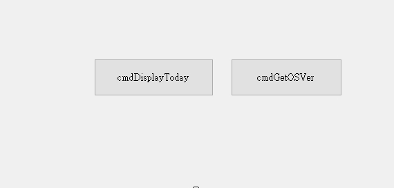
畫面設定完成後，請開啟控制項的程式碼，加入以下的程式碼
1 2 3 4 5 6 7 8 9 10 11 12 13 14 15 16 17 18 19 20 21 22 23 24 25 26 27 28 29 30 31 32 using Microsoft.Win32; using System; using System.Runtime.InteropServices; using System.Windows.Forms; namespace MyDateControl { [ProgId("MyDateControl.MyDateControlUI")] [ClassInterface(ClassInterfaceType.AutoDual)] [Guid(" )] [ComVisible(true)] public partial class MyDateControlUI: UserControl { public MyDateControlUI() { InitializeComponent(); } private void cmdDisplayToday_Click(object sender, System.EventArgs e) { MessageBox.Show(DateTime.Today.ToString("yyyy/MM/dd"), "Today"); } private void cmdGetOSVer_Click(object sender, System.EventArgs e) { RegistryKey key = Registry.LocalMachine.OpenSubKey(@"SOFTWARE\Microsoft\Windows NT\CurrentVersion"); MessageBox.Show(key.GetValue("BuildLabEx").ToString(), "OS Build Ver"); key = null; } } }
建置後來註冊
1 regasm /codebase "D:\Project\github\TestActiveXControl\NetActiveXControlSln\MyDateControl\bin\Debug\MyDateControl.dll"
修改一下之前的index.html
1 2 3 4 5 6 7 8 9 10 <!DOCTYPE> <html > <head > <title > DemoCSharpActiveX webpage</title > </head > <body > <OBJECT id ="DemoActiveX" classid ="clsid:BB40E1F5-0E6C-47B3-A665-0D3FBDE1D01C" codebase ="DemoCSharpActiveX.cab" width ="640px" height ="480px" > </OBJECT > </body > </html >
現在，我們再以瀏覽器來瀏覽此網頁，你看到應該會是這樣
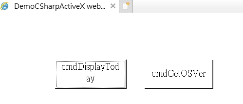
同時，按下cmdDiaplayToday會得到今天的日期，而按下cmdGetOSVer，會出現作業系統的Build版本資料，此版本資訊是來自於登錄資料庫，因此可證明ActiveX控制項具有與作業系統互動的能力。
宣告控制項是安全的 我們一開始設計的MyControl控制項在執行時都會出現潛在安全性問題的提示訊息，這是因為Internet Explorer內建的安全性機制使然，就算把提示的設定改為啟用（Enabled），仍然會出現這個訊息，要努此訊息關閉，你必須要在你的控制項實作一個特別的介面，向IE宣告你的控制項與JavaScript互動時是安全的。
只要你的控制項會和JavaScript互動，就必須實作這個介面。
這個介面是IObjectSafety，它是COM原生函式庫內的一個介面，當IE在載入你的控制項時，會在控制項內搜尋是否有這個介面的存在（即控制項是否有實作此介面），如果沒有找到的話，就會顯示潛在安全性問題的訊息，因此我們需要實作這個介面，請在專案內加入一固類別檔案，命名為IObjectSafety.cs，並將下列程式加入：
1 2 3 4 5 6 7 8 9 10 11 12 13 14 15 16 using System; using System.Runtime.InteropServices; namespace MyDateControl { [ComImport, Guid("CB5BDC81-93C1-11CF-8F20-00805F2CD064")] [InterfaceType(ComInterfaceType.InterfaceIsIUnknown)] public interface IObjectSafety { [PreserveSig] int GetInterfaceSafetyOptions(ref Guid riid, [MarshalAs(UnmanagedType.U4)] ref int pdwSupportedOptions, [MarshalAs(UnmanagedType.U4)] ref int pdwEnabledOptions); [PreserveSig()] int SetInterfaceSafetyOptions(ref Guid riid, [MarshalAs(UnmanagedType.U4)] int dwOptionSetMask, [MarshalAs(UnmanagedType.U4)] int dwEnabledOptions); } }
在MyDateControlUI程式中指示要實作IObjectSafety，並且加上面的實作，完成的程式碼如下，記得修改一下GUID
1 2 3 4 5 6 7 8 9 10 11 12 13 14 15 16 17 18 19 20 21 22 23 24 25 26 27 28 29 30 31 32 33 34 35 36 37 38 39 40 41 42 43 44 45 46 47 48 49 50 51 52 53 54 55 56 57 58 59 60 61 62 63 64 65 66 67 68 69 70 71 72 73 74 75 76 77 78 79 80 81 82 83 84 85 86 87 88 89 90 91 92 93 94 95 96 97 98 99 100 101 102 using Microsoft.Win32; using System; using System.Runtime.InteropServices; using System.Windows.Forms; namespace MyDateControl { [Guid("390FBD8F-FA8D-476F-B81F-B2D5CB859A03"), ProgId("MyDateControlUI.MyDateControlUI"), ComVisible(true)] public partial class MyDateControlUI : UserControl, IObjectSafety { #region IObjectSafety 成員 格式固定 private const string _IID_IDispatch = "{00020400-0000-0000-C000-000000000046}"; private const string _IID_IDispatchEx = "{a6ef9860-c720-11d0-9337-00a0c90dcaa9}"; private const string _IID_IPersistStorage = "{0000010A-0000-0000-C000-000000000046}"; private const string _IID_IPersistStream = "{00000109-0000-0000-C000-000000000046}"; private const string _IID_IPersistPropertyBag = "{37D84F60-42CB-11CE-8135-00AA004BB851}"; private const int INTERFACESAFE_FOR_UNTRUSTED_CALLER = 0x00000001; private const int INTERFACESAFE_FOR_UNTRUSTED_DATA = 0x00000002; private const int S_OK = 0; private const int E_FAIL = unchecked((int)0x80004005); private const int E_NOINTERFACE = unchecked((int)0x80004002); private bool _fSafeForScripting = true; private bool _fSafeForInitializing = true; public int GetInterfaceSafetyOptions(ref Guid riid, ref int pdwSupportedOptions, ref int pdwEnabledOptions) { int Rslt = E_FAIL; string strGUID = riid.ToString("B"); pdwSupportedOptions = INTERFACESAFE_FOR_UNTRUSTED_CALLER | INTERFACESAFE_FOR_UNTRUSTED_DATA; switch (strGUID) { case _IID_IDispatch: case _IID_IDispatchEx: Rslt = S_OK; pdwEnabledOptions = 0; if (_fSafeForScripting == true) pdwEnabledOptions = INTERFACESAFE_FOR_UNTRUSTED_CALLER; break; case _IID_IPersistStorage: case _IID_IPersistStream: case _IID_IPersistPropertyBag: Rslt = S_OK; pdwEnabledOptions = 0; if (_fSafeForInitializing == true) pdwEnabledOptions = INTERFACESAFE_FOR_UNTRUSTED_DATA; break; default: Rslt = E_NOINTERFACE; break; } return Rslt; } public int SetInterfaceSafetyOptions(ref Guid riid, int dwOptionSetMask, int dwEnabledOptions) { int Rslt = E_FAIL; string strGUID = riid.ToString("B"); switch (strGUID) { case _IID_IDispatch: case _IID_IDispatchEx: if (((dwEnabledOptions & dwOptionSetMask) == INTERFACESAFE_FOR_UNTRUSTED_CALLER) && (_fSafeForScripting == true)) Rslt = S_OK; break; case _IID_IPersistStorage: case _IID_IPersistStream: case _IID_IPersistPropertyBag: if (((dwEnabledOptions & dwOptionSetMask) == INTERFACESAFE_FOR_UNTRUSTED_DATA) && (_fSafeForInitializing == true)) Rslt = S_OK; break; default: Rslt = E_NOINTERFACE; break; } return Rslt; } #endregion public MyDateControlUI() { InitializeComponent(); } private void cmdDisplayToday_Click(object sender, EventArgs e) { MessageBox.Show(DateTime.Today.ToString("yyyy/MM/dd"), "Today"); } private void cmdGetOSVer_Click(object sender, EventArgs e) { RegistryKey key = Registry.LocalMachine.OpenSubKey(@"SOFTWARE\Microsoft\Windows NT\CurrentVersion"); MessageBox.Show(key.GetValue("BuildLabEx").ToString(), "OS Build Ver"); key = null; } } }
請將專案內容打開並選擇「應用程式」的頁籤，接下來點選「組件資訊」，將「讓組件成為COM可見（M）」勾選起來
請將專案內容打開並選擇「建置」的頁籤，接下來點選「註冊COM Interop(C)」
建立自動註冊的ActiveXControl 先來安裝Microsoft Visual Studio Installer Projects 可參考VS2017 Setup Project - Where?
安裝項目 MyDateControl.Setup 在「檔案」->「新增」->「專案」，接下來會跳出畫面， 選擇如下在名稱輸入MyDateControl.Setup
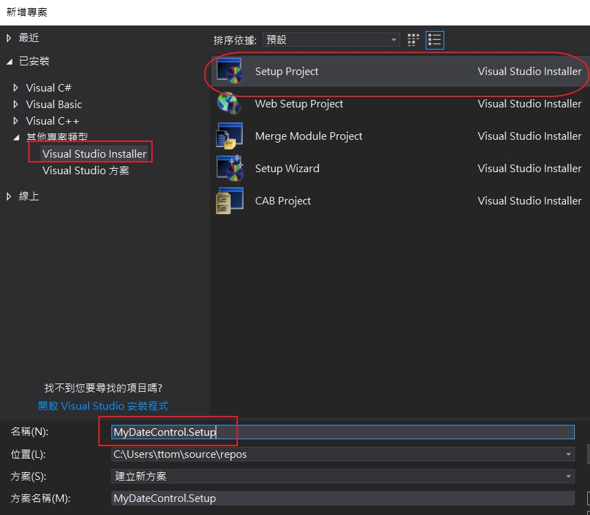
在右鍵點擊“MyDateControl.Setup”的專案修改工程屬性，將“RemovePreviousVers”的值設置爲True
接下來右鍵點擊“MyDateControl.Setup”的專案，依次選擇「Add」->「專案輸出」如下的畫面之後會跳出「加入專案輸出群組」在選擇「MyDateControl」
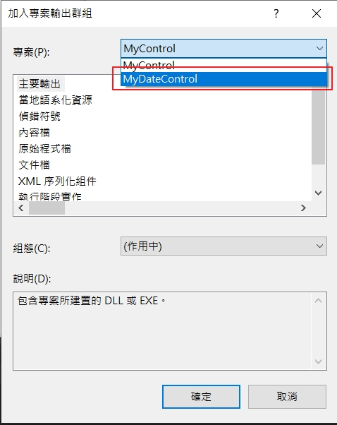
制作cab包 在打包的專案下建立一個目錄「CAB」在裏面有幾個檔案cab.ddf、installer.inf、makecab.bat其中cab.dd和installer.inf文件需簡單說明如下。
cab.ddf文件定義了CAB文件的打包行為，內容包括打包參數，打包內容項以及輸出文件等。需要指出的是，使用C#開發的ActiveX控件CAB包需要包含MSI文件和installer.inf兩部分。cab.ddf文件內容如下：
1 2 3 4 5 6 7 8 9 10 11 12 .OPTION EXPLICIT .Set Cabinet=on .Set Compress=on .Set MaxDiskSize=CDROM .Set ReservePerCabinetSize=6144 .Set DiskDirectoryTemplate="." .Set CompressionType=MSZIP .Set CompressionLevel=7 .Set CompressionMemory=21 .Set CabinetNameTemplate="MyDateControl.CAB" "installer.inf" "MyDateControl.Setup.msi"
installer.inf文件定義了CAB文件的安裝行為，作為控件的一部分打入CAB包中，其內容如下：
1 2 3 4 5 6 7 8 9 [Setup Hooks] hook1=hook1 [hook1] run=msiexec /i %EXTRACT_DIR%\MyDateControl.Setup.msi /qn [Version] Signature= "$CHICAGO$" AdvancedInf=2.0
makecab.bat文件是調用makecab.exe進行打包的批次處理文件，內容如下：
1 makecab.exe /f "cab.ddf"
當建置安裝項目後，將”MyDateControl.Setup.msi”文件複制到CAB目錄下，就可以雙擊makecab.bat來進行打包，執行完成後會輸出MyDateControl.CAB檔，這就是所謂的ActiveX控件了。
簽名 IE采用了AuthenticCode代碼簽名技術，對瀏覽器端安裝ActiveX控件行為進行了控制。上面生成的ActiveX控件如果想在瀏覽器端成功安裝，需要對瀏覽器進行設置。
讓所有用戶都對IE進行設置，顯得不太友好，為此，我們可以考慮使用AuthentiCode技術對ActiveX控件進行簽名。Visual Studio 2010附帶的signtool.exe代碼簽名工具可以完該工作（注意，並非一定要用微軟提側的工具進行簽名，只要按照AuthentiCode技術標準，使用PKCS#7標准定義的數據結構生成待簽名文件的數字簽名，並加入到待簽名文件的PE結構即可）。但需要先准備一個PKCS#12（証書及私錀）文件（.pfx），注意，該証書的增強型密錀用法須包含代碼簽名這項。
可以自已來制作一個可以參考記錄pfx證書的產生 有產生了一個測試文件PKCS#12socialnetwork.pfx，PIN碼為12345678，到CAB的目錄下執行下列的命令
1 "C:\Program Files (x86)\Microsoft SDKs\ClickOnce\SignTool\"signtool sign -f socialnetwork.pfx -p 12345678 ActiveXDemoSetup.CAB
使用makecabsigned.bat來進行一次建立
1 2 makecab.exe /f "cab.ddf" "C:\Program Files (x86)\Microsoft SDKs\ClickOnce\SignTool\"signtool sign -f socialnetwork.pfx -p 12345678 MyDateControl.CAB
應用 修改靜態index.html的頁面
1 2 3 4 5 6 7 8 9 10 <!DOCTYPE> <html > <head > <title > DemoCSharpActiveX webpage</title > </head > <body > <OBJECT id ="DemoActiveX" classid ="clsid:390FBD8F-FA8D-476F-B81F-B2D5CB859A03" codebase ="MyDateControl.CAB#version=1,0,0" width ="640px" height ="480px" > </OBJECT > </body > </html >
以下是會安裝的 在右鍵點擊“MyDateControl.Setup”的專案，依次選擇「Add」->「專案輸出」如下的畫面之後會跳出「加入專案輸出群組」
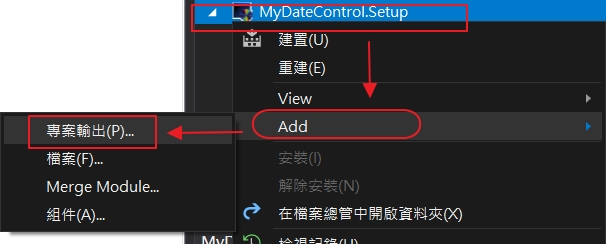
因為我們的測試專案有兩個，選擇MyDateControl，做為主要輸出
接下來在右鍵點擊“MyDateControl.Setup”的專案，依次選擇「View」->「啟動條𢪧」，會跳出另一個設定畫面
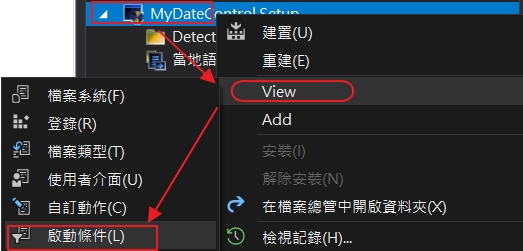
接下來在右鍵點擊“Requirements on Target Machine”的專案，接下來選擇「加入.NET Framework啟動條件」
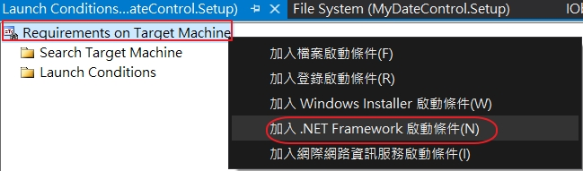
會出現「.Net Framework」，因為測試的程式是4.0，所以在畫面右邊選擇「.NET Framework 4」
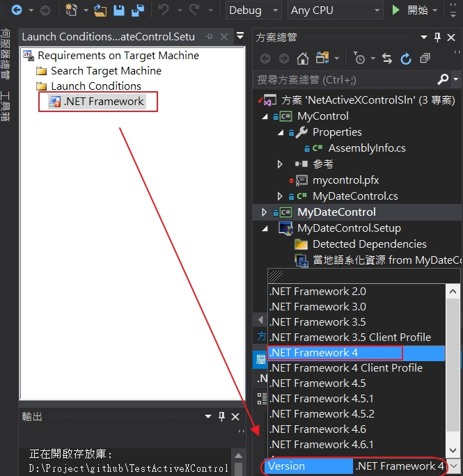
接下來右鍵點擊“MyDateControl.Setup”的專案，依次選擇「Add」->「專案輸出」如下的畫面之後會跳出「加入專案輸出群組」在選擇「MyDateControl」
在畫面右邊會出現如下的畫面，有“主要輸出 frim MyDateControl”
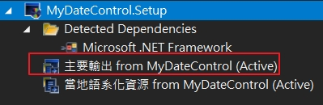
設置「主要輸出 form…」的「Register」為「vsdrpCOM」
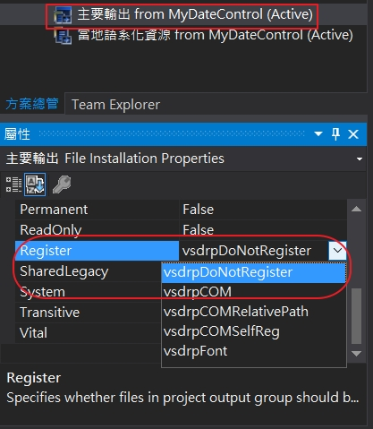
參考資料 歷史最全的C#開發ActiveX
使用C#开发ActiveX控件（新）
visual studio 2012 的制作ActiveX、打包和发布
How to develop and deploy ActiveX control in C#
使用 .NET Framework 開發 ActiveX Control (1) 使用 .NET Framework 開發 ActiveX Control (2)